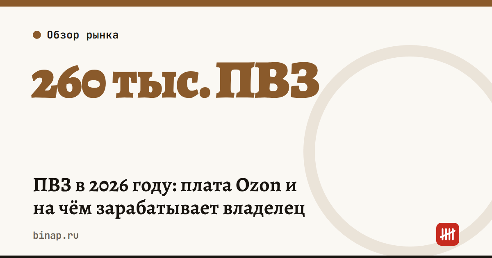

ПВЗ в 2026 году: плата Ozon и на чём зарабатывает владелец

Открыть ПВЗ по-прежнему просто, а зарабатывать на нём сложнее: точек на рынке стало на четверть больше за год, аренда дорожает, а с 1 декабря 2026 года Ozon начнёт брать с владельцев ежемесячную плату — до 550 ₽, но не больше 1% вознаграждения.
Коротко
- На рынке около 260 тыс. ПВЗ, на 25% больше, чем год назад (оценка «Коммерсанта» по Яндекс Картам, сентябрь 2026). У Ozon — более 88 тыс. точек, у Wildberries — 94 тыс.
- Плата Ozon для владельцев: с 1 декабря 2026 года — от 1 до 550 ₽ в месяц, с 1 июля 2027 года — до 2 200 ₽. Не больше 1% вознаграждения владельца.
- Размер платы зависит от срока работы точки: до 12 месяцев — 1 ₽, больше трёх лет — максимум.
- По данным «Коммерсанта», средний чистый доход одной точки — около 15 тыс. ₽ в месяц, аренда выросла примерно на 15%.
- Ozon обещает новым точкам поддержку: в 2026 году — более 10 млрд ₽ на всех, до 5,28 млн ₽ на точку за весь период (по данным «Ведомостей»).
Сроки, изменения и разборы для ИП и самозанятых — каждое утро в Telegram и MAX. Подпишитесь, чтобы не пропустить.
Рынок в цифрах
| Показатель | Значение | Источник |
|---|---|---|
| ПВЗ на рынке | около 260 тыс., +25% за год | «Коммерсантъ», оценка по Яндекс Картам, 09.2026 |
| ПВЗ Ozon | более 88 тыс., +13 тыс. за год | «Коммерсантъ», 10.2026 |
| ПВЗ Wildberries | 94 тыс., +43% за 2025 год | «Коммерсантъ» |
| Вознаграждение владельцам ПВЗ Wildberries за 2025 год | 10,1 млрд ₽, −25% | «Коммерсантъ»; WB с трактовкой не согласен |
| Средний чистый доход точки | около 15 тыс. ₽ в месяц | «Коммерсантъ», 04.2026 |
Точек становится больше быстрее, чем заказов: новые открываются рядом со старыми, и поток делится. Wildberries не согласен, что выплаты владельцам сократились: по его словам, условия не пересматривались, изменилась маркетинговая программа. Сравнивать стоит только свои договоры и свои цифры.
Сколько составит плата Ozon
Платить придётся меньшую из двух сумм: тариф по сроку работы точки или 1% вознаграждения.
Пример (расчёт редакции) для точки, которая работает больше трёх лет:
| Вознаграждение в месяц | 1% | Плата с 01.12.2026 (до 550 ₽) | Плата с 01.07.2027 (до 2 200 ₽) |
|---|---|---|---|
| 40 000 ₽ | 400 ₽ | 400 ₽ | 400 ₽ |
| 100 000 ₽ | 1 000 ₽ | 550 ₽ | 1 000 ₽ |
| 250 000 ₽ | 2 500 ₽ | 550 ₽ | 2 200 ₽ |
Максимальные 2 200 ₽ с июля 2027 года заплатит точка с вознаграждением от 220 000 ₽ в месяц. Как именно считается предел, издания пишут по-разному: «Коммерсантъ» 19.10 назвал 1% «от выручки пункта», а vc.ru и «Коммерсантъ» 20.10 — «от вознаграждения». Уточните это в своём договоре.
На чём зарабатывает и теряет владелец
Доход — вознаграждение маркетплейса за выданные и принятые заказы. Его размер зависит от потока и условий площадки, а их маркетплейс может менять.
Расходы: 1. Аренда — главная статья, по данным «Коммерсанта», выросла примерно на 15%. 2. Зарплата сотрудников и взносы. Как считать взносы ИП за себя — в калькуляторе взносов. 3. Коммунальные платежи, связь, ремонт и оборудование. 4. С декабря — плата Ozon. 5. Налог. Какой объект УСН выгоднее при ваших расходах — в статье «доходы» или «доходы минус расходы».
Поддержка новых точек. Ozon заявил, что в 2026 году направит на поддержку владельцев ПВЗ более 10 млрд ₽. Она действует первые 12 месяцев работы, для части точек — бессрочно, максимум на одну точку — 5,28 млн ₽ за весь период. Это цифры самой компании.
Что проверить перед открытием или расширением
- Возьмите вознаграждение за последние 3 месяца (или прогноз маркетплейса для нового адреса) и посчитайте среднее.
- Вычтите все расходы из списка выше — без учёта поддержки площадки. Если точка не окупается без неё, риск высокий: поддержка временная.
- Посмотрите на Яндекс Картах, сколько ПВЗ уже работает в радиусе 300–500 метров.
- Запросите условия поддержки и порядок расчёта платы письменно.
- Не ориентируйтесь на «средние 15 тыс. ₽ чистыми» — это оценка из прессы, а не условие договора.
Налоговые изменения, которые касаются селлеров и ПВЗ, собраны в разделе Маркетплейсы.
Частые вопросы
С какой даты Ozon берёт плату с владельцев ПВЗ? С 1 декабря 2026 года.
Сколько заплатит ПВЗ, который работает больше трёх лет? До 30 июня 2027 года — до 550 ₽ в месяц, с 1 июля 2027 года — до 2 200 ₽, но не больше 1% вознаграждения.
Сколько сейчас ПВЗ в России? Около 260 тыс. по оценке на основе Яндекс Карт (сентябрь 2026), за год рост на 25%.